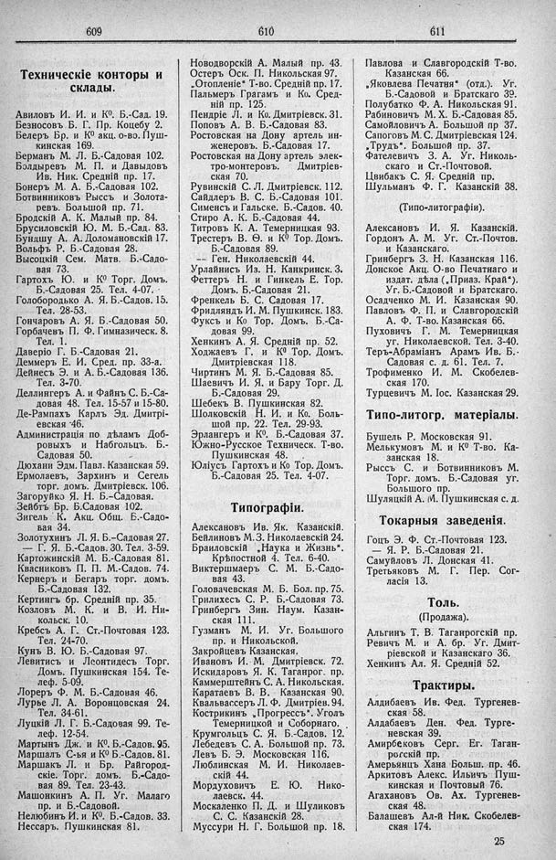

Лист источника 337
Скан

Распознанный текст
609
Техническіе конторы и
склады.
Авиловъ И. И. и К[0]. Б.-Сад. 19.
Безносовъ Б. Г. Пр. Коцебу 2.
Белеръ Бр. и К[0] акц. о-во. Пуш-
кинская 169.
Берманъ М. Л. Б.-Садовая 102.
Болдыревъ М. П. и Давыдовъ
Ив. Ник. Средній пр. 17.
Бонеръ М. А. Б.-Садовая 102.
Ботвинниковъ Рыссъ и Золота-
ревъ. Большой пр. 71.
Бродскій А. К. Малый пр. 84.
Брусиловскій Ю. М. Б.-Сад. 83.
Бундшу А. А. Доломановскій 17.
Вольфъ Р. Б.-Садовая 28.
Высоцкій Сем. Матв. Б.-Садо-
вая 73.
Гартохъ Ю. и К[0] Торг. Домъ.
Б.-Садовая 25. Тел. 4-07.
Голобородько А. Я. Б.-Садов. 15.
Тел. 28-53.
Гончаровъ А. Я. Б.-Садовая 50.
Горбачевъ П. Ф. Гимназическ. 8.
Тел. 1.
Даверіо Г. Б.-Садовая 21.
Деммеръ Е. И. Сред. пр. 33-а.
Дейнесъ Э. и А. Б.-Садовая 136.
Тел. 3-70.
Деллингеръ А. и Файнъ С. Б.-Са-
довая 48. Тел. 15-57 и 15-80.
Де-Рампахъ Карлъ Эд. Дмитрі-
евская 46.
Администрація по дѣламъ Доб-
ровыхъ и Набгольцъ. Б.-
Садовая 50.
Дюхани Эдм. Павл. Казанская 59.
Ермолаевъ, Зархинъ и Сегель
торг. домъ. Дмитріевск. 106.
Загоруйко Я. Н. Б.-Садовая.
Зейбтъ Бр. Б.Садовая 102.
Зигель К. Акц. Общ. Б.-Садо-
вая 34.
Золотухинъ Л. Я. Б.-Садовая 27.
— Г. Я. Б.-Садов. 30. Тел. 3-59.
Картожинскій М. Б.-Садовая 81.
Квасниковъ П. П. М.-Садов. 74.
Кернеръ и Бегаръ торг. домъ.
Б.-Садовая 132.
Кертингъ бр. Средній пр. 35.
Козловъ М. К. и В. И. Ни-
кольск. 10.
Кребсъ А. Г. Ст.-Почтовая 123.
Тел. 24-70.
Кунъ В. Ю. Б.-Садовая 97.
Левитисъ и Леонтидесь Торг.
Домъ. Пушкинская 154. Те-
леф. 5-09.
Лореръ Ф. М. Б.-Садовая 46.
Лурье Л. А. Воронцовская 24.
Тел. 34-61.
Луцкій Л. Г. Б.-Садовая 99. Те-
леф. 12-54.
Мартынъ Дж. и К[0]. Б.-Садов. 95.
Маршалъ С-ья и К[0] Б.-Садов. 81.
Маршакъ Л. и Бр. Райгород-
скіе. Торг. домъ. Б.-Садо-
вая 89. Тел. 23-43.
Машонкинъ А. П. Уг. Малаго
пр. и Б.-Садовой.
Нелюбинъ И. и К[0]. Б.-Садов. 33.
Нессаръ. Пушкинская 81.
610
Новодворскій А. Малый пр. 43.
Остеръ Оск. П. Никольская 97.
„Отопленіе“ Т-во. Средній пр. 17.
Пальмеръ Грагамъ и Ко. Сред-
ній пр. 125.
Пендріе Л. и Ко. Дмитріевск. 31.
Поповъ А. В. Б.-Садовая 83.
Ростовская на Дону артель ин-
женеровъ. Б.-Садовая 17.
Ростовская на Дону артель элек-
тро-монтеровъ. Дмитріев-
ская 70.
Рувинскій С. Л. Дмитріевск. 112.
Сайдлеръ В. С. Б.-Садовая 101.
Сименсъ и Гальске. Б.-Садов. 40.
Стиро А. К. Б.-Садовая 44.
Титровъ К. А. Темерницкая 93.
Трестеръ В. Ѳ. и К[0] Тор. Домъ.
Б.-Садовая 89.
— Ген. Николаевскій 44.
Урлайнисъ Из. Н. Канкринск. 3.
Феттеръ Н. и Гинкель Е. Тор.
Домъ. Б.-Садовая 21.
Френкель Б. С. Садовая 17.
Фридляндъ И. М. Пушкинск. 183.
Фуксъ и Ко Тор. Домъ. Б.-Са-
довая 99.
Хенкинъ А. Я. Средній пр. 52.
Ходжаевъ Г. и К[0] Тор. Домъ.
Дмитріевская 118.
Чиртинъ М. Я. Б.-Садовая 85.
Шаевичъ И. Я. и Бару Торг. Д.
Б.-Садовая 29.
Шебекъ В. Пушкинская 82.
Шолковскій Н. И. и Ко. Боль-
шой пр. 22. Тел. 29-93.
Эрлангеръ и К[0]. Б.-Садовая 37.
Южно-Русское Техническ. Т-во.
Пушкинская 48.
Юліусъ Гартохъ и Ко Тор. Домъ.
Б.-Садовая 25. Тел. 4-07.
Типографіи.
Алексановъ Ив. Як. Казанскій.
Бейлиновъ М. З. Николаевскій 24.
Браиловскій „Наука и Жизнь“.
Крѣпостной 4. Тел. 6-40.
Виктершмаеръ С. М. Б.-Садо-
вая 43.
Головачевская М. Б. Бол. пр. 75.
Грилихесъ С. Р. Б.-Садовая 73.
Гринбергъ Зин. Наум. Казан-
ская 111.
Гузманъ М. И. Уг. Большого
пр. и Никольской.
Закройцевъ Казанская.
Ивановъ И. М. Дмитріевск. 72.
Искидаровъ Я. К. Таганрог. пр.
Каммерштейнъ С. А. Никольская.
Каратаевъ В. В. Казанская 90.
Квальвассеръ Л. Ф. Дмитріев. 94.
Кострикинъ „Прогрессъ“. Уголъ
Темерницкой и Соборнаго.
Крумгольцъ С. Я. Б.-Садов. 12.
Лебедевъ С. А. Большой пр. 73.
Левъ Б. Э. Московская 116.
Люблинская М. И. Николаев-
скій 44.
Мордуховичъ Е. Ю. Нико-
лаевск. 44.
Москаленко П. Д. и Шуликовъ
С. С. Казанскій 28.
Муссури Н. Г. Большой пр. 18.
611
Павлова и Славгородскій Т-во.
Казанская 66.
„Яковлева Печатня“ (отд.). Уг.
Б.-Садовой и Братскаго 39.
Полубатко Ф. А. Никольская 91.
Рабиновичъ М. Х. Б.-Садовая 85.
Самойловичъ А. Большой пр 37.
Сапоговъ М. С. Дмитріевская 124.
„Трудъ“. Большой пр. 37.
Фателевичъ З. А. Уг. Николь-
скаго и Ст.-Почтовой.
Цвибакъ С. Я. Средній пр.
Шульманъ Ф. Г. Казанскій 38.
(Типо-литографіи).
Алексановъ И. Я. Казанскій.
Гордонъ А. М. Уг. Ст.-Почтов.
и Казанскаго.
Гринбергъ З. Н. Казанская 116.
Донское Акц. О-во Печатнаго и
издат. дѣла („Приаз. Край“).
Уг. Б.-Садовой и Братскаго.
Осадченко М. И. Казанская 90.
Павловъ Ф. П. и Славгородскій
А. Ф. Т-во. Казанская 66.
Пуховичъ Г. М. Темерницкая
уг. Николаевской. Тел. 3-40.
Теръ-Абраміанъ Арамъ Ив. Б.-
Садовая с. д. 61. Тел. 7.
Трофименко И. М. Скобелев-
ская 170.
Турцевичъ М. Іос. Казанская 29.
Типо-литогр. матеріалы.
Бушель Р. Московская 91.
Мелькумовъ М. и К[0] Т-во. Ка-
занская 18.
Рыссъ С. и Ботвинниковъ М.
Торг. домъ. Б.-Садовая уг.
Большого пр.
Шуляцкій А. М. Пушкинская с. д.
Токарныя заведенія.
Гоцъ Э. Ф. Ст.-Почтовая 123.
— Я. Р. Б.-Садовая 21.
Самуйловъ Л. Донская 41.
Третьяковъ М. Г. Пер. Сог-
ласія 13.
Толь.
(Продажа).
Альгинъ Т. В. Таганрогскій пр.
Ревичъ М. и А. бр. Уг. Дмит-
ріевской и Казанскаго 36.
Хенкинъ Ал. Я. Средній 52.
Трактиры.
Алдибаевъ Ив. Фед. Тургенев-
ская 58.
Алдабаевъ Ден. Фед. Турге-
невская 39.
Амирбековъ Серг. Ег. Таган-
рогскій пр.
Амерьянцъ Хана Больш. пр. 46.
Аркитовъ Алекс. Ильичъ Пуш-
кинская и Почтовый 76.
Агахановъ Ов. Ах. Тургенев-
ская 48.
Балашевъ Ал-й Ник. Скобелев-
ская 174.
25